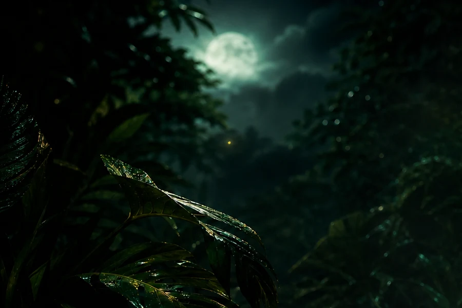
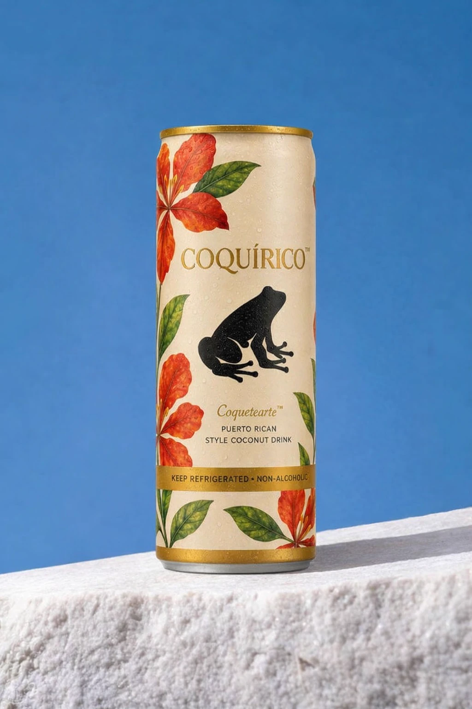
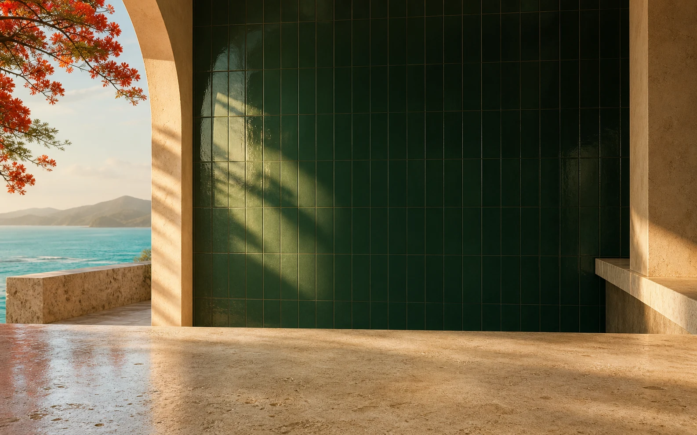
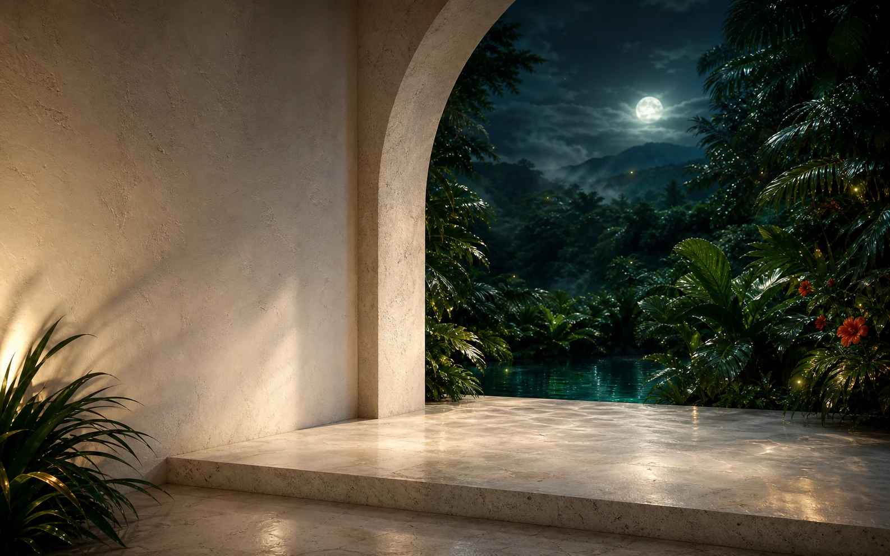

01 · 02 / 07
Coconut water & coconut milk
agua de coco y leche de coco
The first two on the can — and one coconut covers both. The base, so it drinks cool and creamy.


Puerto Rico · Sin alcohol
A Puerto Rican coconut drink. No alcohol, no hurry — just the island, cold.
De noche, la isla canta. Nosotros solo la embotellamos.

Coquetearte · sobre hielo
Puerto Rican style coconut drink
Non-alcoholic — it says so on the can.
Per 8 fl oz / 240 ml can, as printed.
Coconut water and coconut milk, first two on the list.
Las latas
Two of these are real. The rest are studies, editions and ideas — and every card says which it is.
Lo que lleva
Everything in Coquetearte, straight off the back of the can. Seven ingredients — and that list is the whole list.
Scroll to turn it · tap an ingredient · spin the can
Off the back of the can
Ingredients:
Coconut Water, Coconut Milk, Cane Sugar, Agave Syrup, Natural Flavors, Cinnamon, Vanilla Extract
0 of 7 read
01 · 02 / 07
agua de coco y leche de coco
The first two on the can — and one coconut covers both. The base, so it drinks cool and creamy.
03 / 07
azúcar de caña
Sweetness, part one. It rounds the coconut off.
04 / 07
sirope de agave
Sweetness, part two — so the sweet stays soft.
05 / 07
sabores naturales
That’s exactly how the can says it — so that’s exactly how we say it. No guessing, and no picture.
06 / 07
canela
Canela — the warm note under the coconut.
07 / 07
extracto de vainilla
The last soft edge before the finish.
The artist editions are the same drink. The flavor studies are imagined, not bottled — they have no formula. No alcohol: the can’s gold band says it out loud — keep refrigerated · non-alcoholic.

De El Yunque
El Yunque is the rainforest that sits over the island — warm, wet, awake after dark. The coquí is the small tree frog who lives in it. At dusk he starts: two notes, co… quí, over and over, until the whole hillside is answering.
That call is our name, our sound and our first ingredient. The rest is coconut — water and milk, a little cane and agave, cinnamon, vanilla. Cold, non-alcoholic, Puerto Rican. Everything we make starts on that hillside, after dark.


El Yunque, down to the coast. The coquí sings two notes, all night, from this hillside.
Cómo se sirve
Serving suggestions, not recipes. Three ways we like it cold — no measurements, nothing to mix.

MiddayMoonlight
Al mediodíaBajo la lunaStraight from the can, ice-cold, in the midday sun. Nothing else.Straight from the can, ice-cold, with the moon on the water. Nothing else.
Serving suggestion — no measurements.


Golden hourMidnight
La hora doradaA medianocheStraight and very cold as the sun drops — the island’s happy hour without the hour.Ice-cold at the water’s edge, under a high moon, with the coquí in full chorus.
Serving suggestion — no measurements.
Nightfall
De nocheThe can, ice-cold, opened at blue hour — when the lanterns come on and the coquí starts.
Serving suggestion — no measurements.
Where the song starts.
Where the first fridges hum.
The valley in the middle of everything.
Señorial, and slower than the rest.
The sunset side of the island.
De El Yunque a toda la isla — areas we’re working toward. Not stockists.
Llegando a colmados
Nothing is on shelves yet. These are the parts of the island we’re working toward — colmados first, the way it should be.
Preguntas
Coquírico, coquito, coquí — three words, one island. Here’s what people ask us most. You say co…, we say quí.
No. Coquetearte is a non-alcoholic coconut drink — it says so on the can. The two exceptions are El Original, our holiday coquito, which is made with coconut and white rum, and the Rum Expression, which is a 21+ concept we have not made.
Coquito is Puerto Rico’s holiday coconut drink, shared at Christmas. El Original is our 750 mL bottle of it. Coquetearte is the everyday, coquito-style cooler — same island, no alcohol.
No. Brisa de Parcha, Guayaba Rosada and Café y Canela are flavor studies — imagined, not bottled. There is no formula behind them. The artist editions are the opposite: those are the real Coquetearte recipe wearing different art.
Nowhere yet. This is a concept site — presentation only. We’re working toward colmados across the island. Leave an email and we’ll say when.
El Original’s own label says vegan coquito. For Coquetearte we only publish what’s printed on the can — coconut water, coconut milk, cane sugar, agave syrup, natural flavors, cinnamon and vanilla extract. The only milk on that list is coconut milk.
We don’t publish a caffeine figure, so we won’t guess at one. What we do publish is the whole ingredient list above: no coffee and no tea are in it. Café y Canela is a flavor study — a drawing of a coffee idea, not a drink.
The coquí is Puerto Rico’s small tree frog. He sings two notes — co… quí — all night, and he lends the brand its name. Hear him once and you’ll know why the island is loud after dark.
Te avisamos
We’ll say when the first colmado gets it — and nothing else. No list exists yet; this page is a presentation.